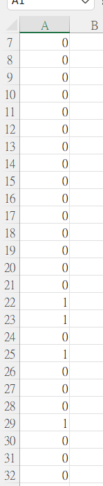

E. coli Gene Classification Project
Project Overview
This project focuses on classifying genes in *E. coli* bacteria based on their likelihood of having a "cell communication" function. The dataset consists of 1500 samples with 103 numerical features and 3 nominal features per gene, as well as a target label indicating the gene's functionality.
Multiple machine learning models were tested, including K-Nearest Neighbors (KNN), Decision Trees, and Random Forest, to identify the most accurate classification method. The KNN model with K=13 showed the highest accuracy at 95%, but Decision Trees and Random Forest also contributed valuable insights into the dataset.
Confusion Matrix and Model Metrics
This image shows the confusion matrix and performance metrics for the KNN model. The model achieved a precision and recall of 0.97 for the negative class (0) and 0.80 for the positive class (1), demonstrating strong overall performance.

Dataset Preview
This image provides a preview of the dataset, displaying the first few rows and the 103 numerical features. The dataset includes missing values, which were handled through imputation in the preprocessing stage to ensure robust model training.

Prediction Results
The final predictions for test data are presented here. The binary outcomes (0 and 1) indicate whether each gene is classified as having a cell communication function, based on the trained KNN model.
